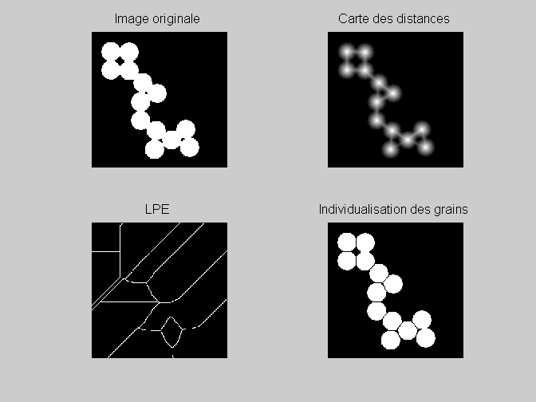
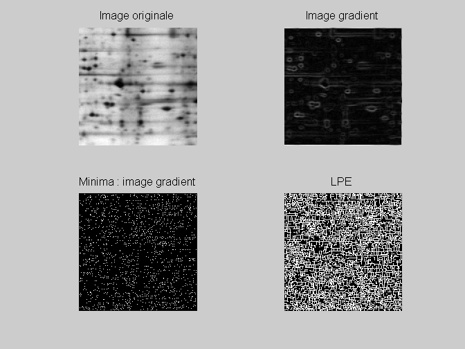
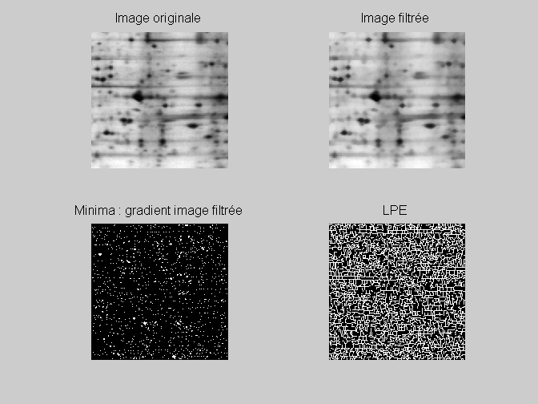
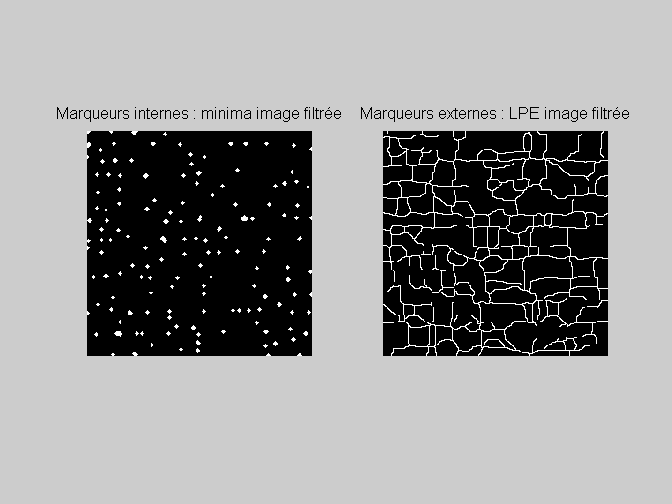
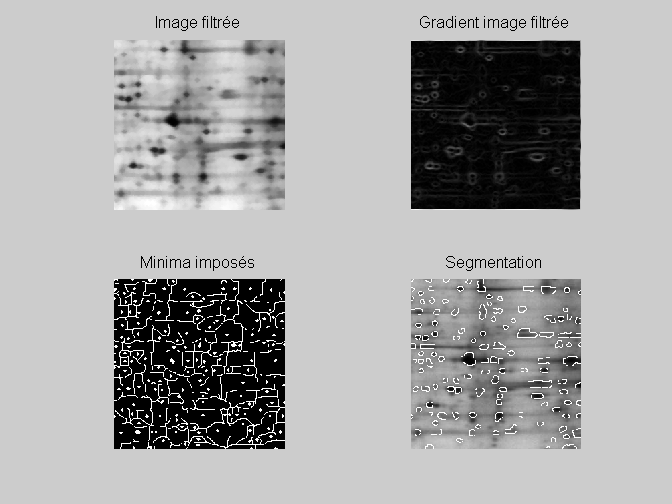

CORRECTION TP SEGMENTATION (2) - OPTION I&S
Contents
0 - Nettoyage
clear all;close all;clc
1 - LPE et carte de distances
lecture image
A=imread('circles.tif'); % carte des distances dist=bwdist(~A); % watershed watf=watershed(imcomplement(dist)); watf=(watf==0); % individualisation B=A & ~watf; % visualisation figure subplot(2,2,1);viewImage(A);title('Image originale'); subplot(2,2,2);viewImage(dist);title('Carte des distances'); subplot(2,2,3);viewImage(watf);title('LPE'); subplot(2,2,4);viewImage(B);title('Individualisation des grains');
2 - LPE et gradients
% lecture image A=imread('gel.jpg'); % gradient gradient=sobel(A); rm=imregionalmin(gradient); % watershed wat=watershed(gradient); wat=(wat==0); % visualisation figure subplot(2,2,1);viewImage(A);title('Image originale'); subplot(2,2,2);viewImage(gradient);title('Image gradient'); subplot(2,2,3);viewImage(rm);title('Minima : image gradient'); subplot(2,2,4);viewImage(wat);title('LPE'); % LPE du gradient de l'image filtrée % lecture image A=imread('gel.jpg'); % filtrage se = strel('disk',2); AA=imopen(A,se); f=imclose(AA,se);clear AA; % gradient gradient=sobel(f); rm=imregionalmin(gradient); % watershed wat=watershed(gradient); wat=(wat==0); % visualisation figure subplot(2,2,1);viewImage(A);title('Image originale'); subplot(2,2,2);viewImage(f);title('Image filtrée'); subplot(2,2,3);viewImage(rm);title('Minima : gradient image filtrée'); subplot(2,2,4);viewImage(wat);title('LPE'); 
3 - LPE contrainte par des marqueurs
% marqueurs internes : minima image filtrée se = strel('disk',2); AA=imopen(A,se); f=imclose(AA,se);clear AA; rm=imregionalmin(f); % marqueurs externes : watershed de l'image filtrée watf=watershed(f); watf=(watf==0); % visualisation des marqueurs figure subplot(1,2,1);viewImage(rm);title('Marqueurs internes : minima image filtrée'); subplot(1,2,2);viewImage(watf);title('Marqueurs externes : LPE image filtrée'); % imposition des minima gradient=sobel(f); mie=imimposemin(gradient, rm | watf); minima=max(rm,watf); % watershed contraint watc=watershed(mie); watc=(watc==0); % superposition des images originale et segmentée seg=A; seg(watc==1)=255; % visualisation figure subplot(2,2,1);viewImage(f);title('Image filtrée'); subplot(2,2,2);viewImage(gradient);title('Gradient image filtrée'); subplot(2,2,3);viewImage(minima);title('Minima imposés'); subplot(2,2,4);viewImage(seg);title('Segmentation'); 
4 - Fonctions annexes
readfile('sobel.m'); readfile('viewImage.m');
function B=sobel(A) C=double(A); h1=[1 2 1;0 0 0;-1 -2 -1]; h2=h1'; C1=filter2(h1,C,'same'); C2=filter2(h2,C,'same'); B=sqrt(C1.^2+C2.^2); function viewImage(A) B=double(A); mmax=max(max(B)); mmin=min(min(B)); if (mmax == mmin) B=0; else B=uint8(255*(B-min(min(B)))/(max(max(B))-min(min(B)))); end colormap gray;axis image; imshow(B);